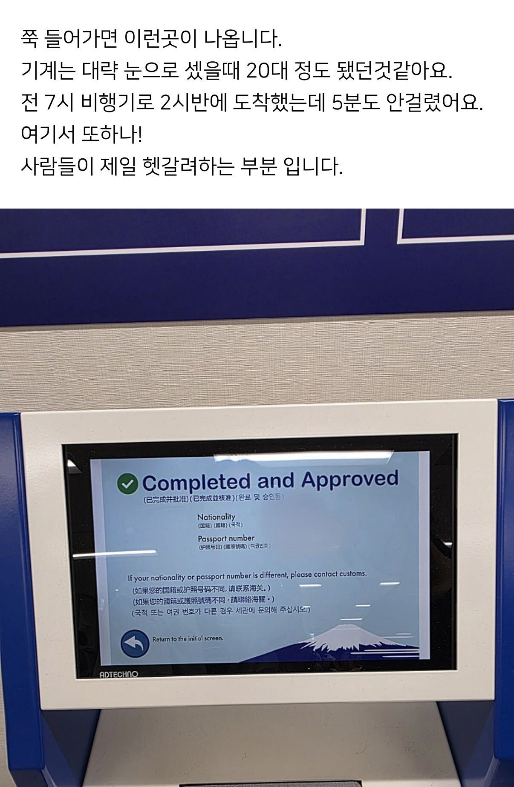
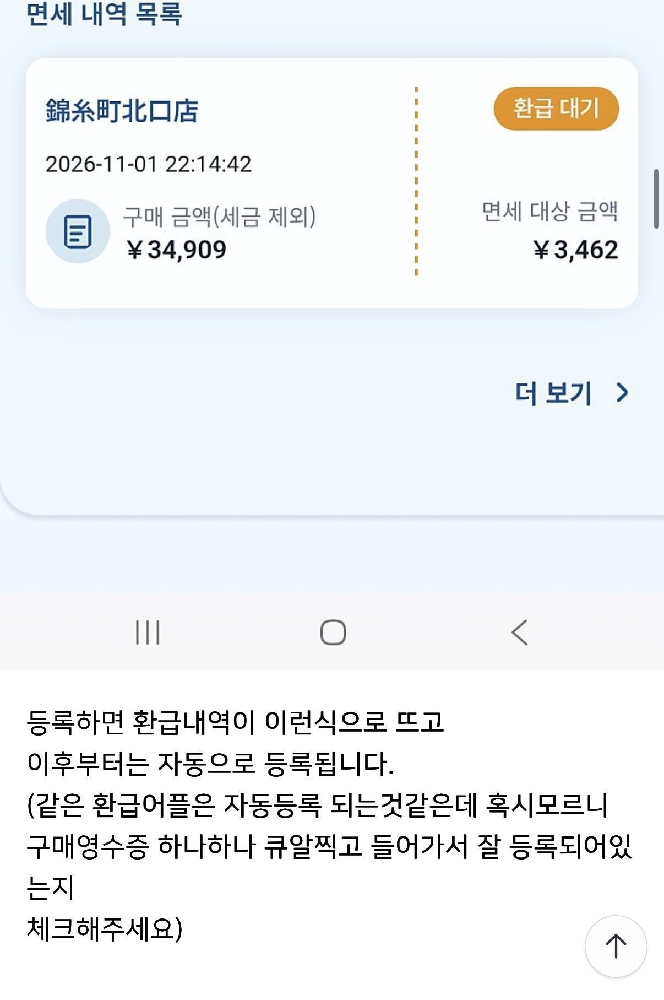
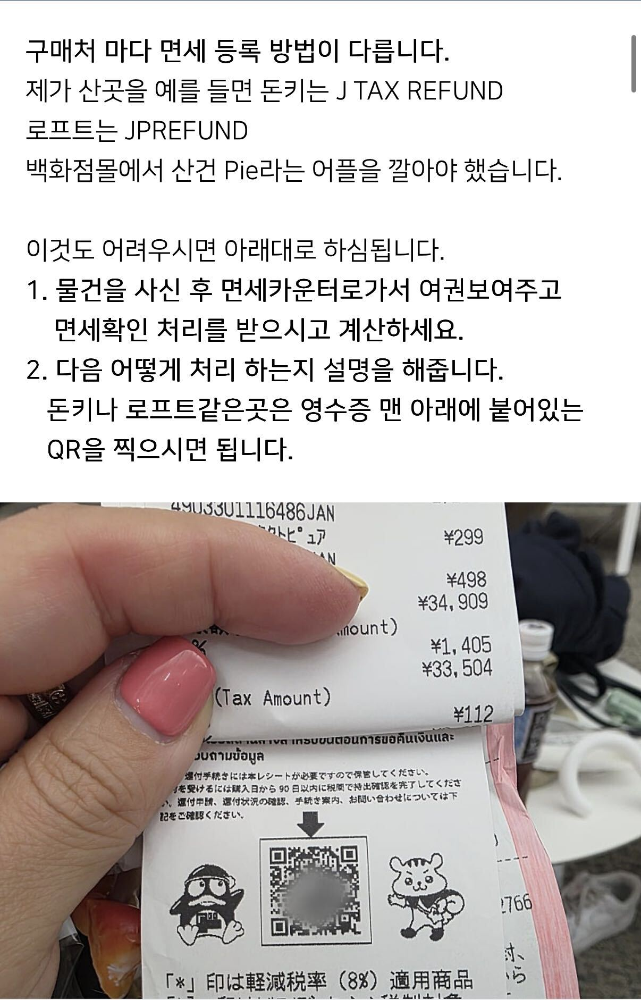

오사카 2026 · 11/19 귀국일
오사카 면세 환급 가이드
11/19 KIX 출국 날, 이 페이지 하나만 엽니다. 2026년 11월 1일부터 일본은 먼저 내고 나중에 돌려받는 방식으로 바뀌었습니다.
리펀드 방식 (2026-11-01~)
KIX 제1터미널
성인 2명
OZ113 19:45
쇼핑 중이면 「매장에서 할 일」 부터 보세요 →
01 딱 3단계입니다매장 등록, 짐 부치기 전 세관확인, 그리고 환급. 이 셋만 기억하면 됩니다.
STEP 1 · 매장 여권을 내고 세금 포함 으로 결제합니다. 환급수단은 카드로 등록.
STEP 2 · 공항 캐리어를 부치기 전에 4층 키오스크에서 여권을 스캔합니다.
STEP 3 · 환급 카드 등록이면 끝. 현금이면 출국심사 뒤 3층 단말.
STEP 1 · 매장
여권 + 세금 포함 결제
환급수단 카드 등록
영수증 보관
STEP 2 · 공항
짐 부치기 전, 4F
여권 스캔 → GREEN
RED 면 물품 지참
STEP 3 · 환급
카드: 여기서 끝
현금: 출국심사 뒤 3F
단말 16대
2026-11-01 이후 모든 구매에 적용. 최소 세전 5,000엔 · 구매일로부터 90일 이내 세관확인
02 Day4 시간표와 포기선17:37 도착부터 19:45 출발까지. 컷오프는 3개입니다.
시각 행동 메모 16:30 호텔 출발 → 난바역 택시 ¥800 17:00 난카이 라피트 17:37 KIX 도착 17:47 T1 4층 세관 키오스크 체크인 B 앞 또는 E 앞 , 현장 안내 우선 18:15 위탁 수하물 아시아나 D Island , SBD 마감 18:45 18:25 보안·출국심사 — 18:40 3층 현금환급 단말 카드 환급만이면 생략 19:10 게이트 19:45 OZ113
포기선 3개 — 이 시각이 지나면 미련 없이 버립니다
18:15 세관확인이 안 끝났으면 그 영수증 환급은 포기하고 캐리어를 부칩니다.18:45 위탁 수하물 마감.19:00 현금 환급을 못 받았으면 포기하고 게이트로 갑니다.
캐리어 규칙 하나. 세관확인이 끝날 때까지 캐리어를 부치지 않습니다. 18:15가 되면 미완이어도 부칩니다. 액체·화장품은 캐리어에, 주얼리·고가품은 기내 가방에 보증서와 함께 넣습니다.
03 공항에서 할 일캐리어를 부치기 전에 4층 키오스크부터 갑니다. 순서를 바꾸면 RED 판정 때 물품을 꺼낼 수 없습니다.
4층 국제선 출발 로비, 체크인 카운터 B 앞 또는 E 앞 키오스크 단말이 줄지어 있습니다. T1에 24대. 어느 쪽이 가까운지는 현장 안내를 따릅니다. 여권을 스캔합니다 단말에 여권을 올리면 구매 기록을 조회합니다. 수 초면 끝납니다. 화면에 Completed and Approved + 초록 표시 이게 끝입니다. 다음 화면은 없습니다. 사람들이 여기서 "더 해야 하나?" 하고 서 있는데, 아닙니다. RED(빨간 표시)면 옆 세관 카운터로 면세품을 전부 지참해 직원 확인을 받습니다. 물품을 못 보여주면 그 영수증 전체가 환급 불가입니다. 그 다음에 캐리어를 부칩니다 아시아나 D Island, 18:45 마감. 보안·출국심사 후, 현금만 3층 단말로 제한구역 안 현금환급 단말 16대. 카드로 등록했다면 그냥 게이트로 가면 됩니다.
VJW 대안. 공항 전용 Wi-Fi 구역에서 Visit Japan Web으로도 같은 세관확인을 할 수 있습니다. 단말이 붐빌 때만 씁니다. [확인 필요]
KIX 제1터미널 4층 · 국제선 출발 로비
키오스크는 체크인 카운터 B 앞과 E 앞. 아시아나는 D 아일랜드. 현장 안내 우선.
A
B
C
D
E
F
G
H
▲ 키오스크
▲ 키오스크
▲ 아시아나 위탁
← 입구 / 라피트에서 올라온 에스컬레이터
① 4F 올라와서 ② 키오스크(B 또는 E) 여권 스캔 ③ D 아일랜드에서 위탁
위탁은 세관확인 뒤. 순서를 바꾸면 RED 때 물품을 꺼낼 수 없습니다. T1 키오스크 24대.
세관확인 완료
GREEN · 화면 확인
카드로 등록했다
앱에 카드번호 입력 → 끝
현금으로 받는다
출국심사 뒤 3F 단말 16대
게이트로
19:10 도착 목표
기본값은 카드 환급. 현금은 시간이 남을 때만. 등록 후 수단 변경 가능 여부는 사업자별 [확인 필요].
사진 자리 — 원본 파일 대기

나리타 T1 예시 Completed and Approved. 이 화면이 나오면 세관 절차는 종료입니다. KIX 화면 문구·배치는 다를 수 있습니다.
04 매장에서 할 일여권을 내고 세금 포함으로 결제합니다. 환급은 카드로 등록하는 것이 기본값입니다.
계산 전에 면세카운터로 여권을 보여주고 면세 대상임을 확인받은 뒤 계산합니다. 세금 포함 금액으로 결제 예전처럼 세금을 뺀 가격이 아닙니다. 10%를 먼저 냅니다. 환급수단 등록 카드번호를 등록합니다. 현금 수령이 가능한 매장도 있지만 카드가 안전합니다. 영수증은 버리지 않습니다 영수증 하단 QR을 앱으로 찍어 등록을 확인합니다. 영수증 1장이 판정 단위입니다. 이메일이 필요합니다 JTAXREFUND는 이메일로 임시 ID를 보내줍니다. 그걸로 비밀번호를 설정해 로그인합니다.
면세 기준은 점포·1일 합계 세전 5,000엔 이상입니다(세금 포함 5,500엔, 식품 8%는 5,400엔). 영수증 합산 단위는 매장마다 다를 수 있습니다. 환급액은 수수료가 빠져 10%보다 조금 적을 수 있습니다.
05 환급 앱 3종PIE, JTAXREFUND, JPREFUND를 표로 비교합니다. 어느 앱인지는 계산할 때 알려줍니다.
앱 매장에서 환급수단 입력 특이점 JPREFUND 로프트 등 영수증 QR 스캔 출국 전 앱에서 절차가 가장 짧음 JTAXREFUND 돈키호테 등 QR 스캔, 앱 설치 앱에서 카드 등록 이메일로 임시 ID 발급 → 비밀번호 설정. 현금환급 체크란이 없는 경우가 있음 PIE 백화점 등 앱 설치 + 직원 확인 세관심사 후 앱에서 입력 [확인 필요] 현장 확인이 필수. 공항에서 잊으면 환급 불가
등록 후 공항에서 수단을 바꿀 수 있는지는 사업자별로 다릅니다. 바꿀 수 있다고 가정하지 않습니다. [확인 필요]
06 등록됐는지 확인앱 목록에 구매 내역이 떴는지 영수증별로 봅니다.
사진 자리 — 원본 파일 대기

면세 내역 목록. 상점·일시·구매 금액·면세 대상 금액·환급 대기 상태가 뜹니다. 등록 이후는 자동으로 쌓이지만, 영수증 QR을 하나씩 찍어 누락이 없는지 확인합니다.
같은 환급 앱을 쓰는 매장은 자동 등록되는 것으로 보입니다. 그래도 영수증 하나하나 QR을 찍어 확인합니다.
완료 화면 문구: "완료되었습니다! 환급금은 18개월 이내 언제든지 출금하실 수 있습니다" (JTAXREFUND/JPREFUND 화면). 수령 기한·방법의 정확한 해석은 [확인 필요].
07 우리 구매 체크리스트구매처마다 확인할 것을 그 자리에서 체크합니다.
구매처 ① ② ③ 스기약국 11/18 09:20 ☐ ☐ ☐ 드럭스토어·돈키 계열 ☐ ☐ ☐ 백화점 (다이마루 등) ☐ ☐ ☐ 불가리·반클리프·티파니 ☐ ☐ ☐ 구로몬 (포장 기념품만) ☐ ☐ ☐
① 면세카운터에서 여권 확인을 받았나 ② 앱 등록·QR 스캔을 했나 ③ 영수증을 보관했나. 구로몬에서 먹은 음식은 면세 대상이 아닙니다. 포장 기념품만 해당하고, 출국 당일 구매분이 키오스크에 반영되는지 현장에서 확인합니다.
인천 롯데·신라 픽업은 일본 면세가 아닙니다. 한국 입국 1인 $800 한도에 합산 되므로 영수증을 버리지 않습니다.
08 환급이 0원 되는 경우세관확인 전에 캐리어를 부치면 위험합니다. 다섯 가지만 피하면 됩니다.
영수증 1장 단위 판정. 그 영수증의 물품이 하나라도 없으면 그 영수증 전체가 환급 불가입니다. 나눠 담지 말고 한 번에 제시합니다.일본 안에서 개봉·사용·섭취. 화장품·식품·의약품은 출국 전에 쓰면 안 됩니다. 특수 포장은 폐지됐지만 이 규정은 그대로입니다.세관확인 전 위탁. RED가 나면 물품을 꺼내야 합니다. 짐을 이미 부쳤으면 항공사 대응에 따라 불가능할 수 있습니다.절차 중단. 시간이 없어 중간에 탑승하면 그 구매 건은 완료로 인정되지 않습니다.2명 각자. 구매자 본인 여권으로 본인이 스캔합니다. 대신 찍어주는 방식은 안 됩니다.
09 무엇이 바뀌었나2026-11-01부터 먼저 내고 나중에 돌려받습니다.
~2026-10-31 2026-11-01~ 결제 세금 뺀 가격 세금 포함 가격 세관확인 없음 (매장에서 종료) 출국 전 필수 , 보안검색 전환급 매장에서 즉시 세관확인 후 등록한 수단으로 구분·상한 일반/소모품 구분, 소모품 50만엔 구분 폐지, 상한 폐지 포장 특수 포장 의무 폐지 (개봉 금지는 유지)
최소 구매액은 그대로 세전 5,000엔입니다. 구매일로부터 90일 안에 세관확인을 받아야 하고, 별송(郵送)으로 대체하는 방식은 2025년 4월 1일 폐지됐습니다.
10 실전 팁과 출처블로그 후기에서 뽑은 8개
6시간 일찍 갈 필요는 없습니다. 후기는 4시간 반 전 도착해 세관확인·현금환급까지 10분도 안 걸렸다고 합니다. 우리는 2시간 여유입니다.
매장에서 안내받은 대로 미리 처리해 두면 공항에서 할 일이 줄어듭니다.
영수증은 절대 버리지 않습니다.
면세 등록에 이메일이 필요합니다. JTAXREFUND는 임시 ID를 메일로 보냅니다.
완료 화면에서 멈추지 않습니다. 그게 끝입니다.카드로 체크했어도 현금 환급기를 한 번 확인합니다. 카드 등록인데 현금이 나온 사례가 있습니다.
현금을 받고 싶은데 카드 입력창만 뜬다면, 카드를 입력해도 현금 환급기에서 받을 수 있는 경우가 있습니다.
후기 작성자가 있는 동안 빨간불은 한 명도 없었습니다. 초록불이 기본입니다.
사진 자리 — 원본 파일 대기

나리타 T1 예시 QR 을 앱으로 찍어 등록합니다. 영수증 1장이 세관 판정 단위입니다.
확인 필요 7건
아래는 아직 공식 원문으로 확정하지 못했습니다. 현장 안내를 우선합니다.